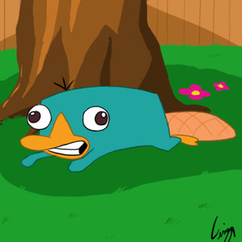

Hack
 De: La Frikipedia, la enciclopedia extremadamente seria.
De: La Frikipedia, la enciclopedia extremadamente seria.
Todos hemos escuchado de los putos hacks que son buenos si los usas tu pero malos si los usan los cabrones hackers expertos.
Como detectar hacks y contrarestarlos
Bien en si es SUPER DIFICIL Facil detectar hacks solo ve al weon que los mata a todos de un disparo y no se muere nunca (en juegos de disparo) el que anda con la estrella todo el rato (mario kart, a mi me paso) , o que ves su personaje y es un bicho raro que no tien nada que ver con el juego , etc ,etc, etc,hasta el infinito.
- Hay muchas formas de contrarestalos: la primera es la mas
gay facil:
- Acusarlos al administrador de la partida:
Primero debes ubicar el nombre del garrota hacker y ubicar al administrador y acusalo sin que el hacker se entere o te pillara odio y te acosara...(en el juego no en la realidad...que pensaste pervertido...)
- La segunda es la mejor pero la mas poco practica(KILL HIM):
Esa cara puso cuando lo banearon porque lo acuse al admin de que usaba hacks
- Simplemente ve a su casa y matalo como el mato a muchos con sus hacks(aunque fue de juego)pero si preguntan diles que lo mataste de juego PERO el se murio de verdad y no te haran nada.
- Y la ultima y mas dificil:
- Deja de jugar y toma un poco de aire libre(casi me sofoco al escribir esta herejia)
Hacks Aliados
De seguro que al escuchar de hack habras pensado en "juegos hack?" NO ME LO NIEGUES! Los hack tambien son conocidos como cheats , chetos(no son esos palos de plastico con sabor a mierda),gameshark,codebreaker,action replay,etc...
Los gamesharks son mas peligrosos que los otros tipos de hack
mierda los fomes com Super Mario Bros una vez que hackeen un juego bueno de Wii, PS3, XBox360 o Pc de ultima generacion me sacare el sombrero (claro si tuviera, en ese me sacare el jockey , gorro con vicera , etc)
Hacks Malditos/Benditos
Los hacks infernales/celestiales son los que ayudan un monton si estan de tu parte pero molestan mas que la cresta (del gallo) si tu los tiran a ti.
- Entre ellos:
- Vida infinita
- Municion infinita
- 1 Hit kill
- Tener la bazuca/Espada Laser(aunque no aparezca en el juego)

Tipico ejemplo de juego de mario hackeado para parecer otro
- Jugar como Kratos
- Echa garabatos sin censura
- Juega como Superman
- Juega como Mickey (cuando se pone el sombrero de mago y los hace cagar a todos)
- Juega como Ip Anonima(eres invisible y matas a los demas editandoles la vida a 0)
- Juega como Zero (megaman ZERO el de megaman X vale
callampa mucho menos)
Y muchos mas de los que no me acuerdo...
Como Saber Si Te Hiciste Adicto
Si de pronto te empieza a interesar buscar hacks de juegos que no salvan ni una clasicos como mario bros y the legend of zelda eres un adicto a los hacks luego tu empezaras a aprender y a buscar mas hacks y hasta que llegues a un punto en que tu haras tus propios hacks. Si te haces adicto deberas tomar esto para saciar tu sed de crear hacks
Sabias Que
- Dios usa el hack de GOD MODE?
- Y Chuck Norris tambien?
- E Ip Anonima usa el hack BADASS MODE?(Que es lo mismo que el god mode pero este le permite escribir en frikipedia sin nesecidad de der su nombre)
- Y El Pato Donald HACKEO tu computadora y sabe todo lo que haces?
- Y yo se la HACKEE a él, pero no lo sabe?
- Y que el ornitorrinco es el unico mamifero que pone huevos?
- Porque se hackeo a si mismo?
- Pero le salio mal y pone huevos pero es una mezcla de como 5 animales?
- Y ya no se lo escribo?
- Y donde esta Perry?
- Oh ahi estas Perry!
- GRUUUUUU.....-Dijo Perry-
 El ornotorrinco se hackeo a si mismo para parecer otros animales.Perry es un caso especial ya que él incluyo el KARATE-MOD
- Es un ornitorrinco y no hace gran cosa.
- Claro ademas de se un hacker profesional.
- Y ya no se lo que digo?
- Porque me hackee para escirbir un articulo en la frikipedia?
- Y yo te hackee a ti tambien?
- Y todo esto se me salio de control?
- Y que tengo que apagar el computador?
- Porque me hackearon el facebook?
- Y descubri que fue Ip Anonima?
- Y que yo hackee tu facebook?
- Aunque no tienes?
- Pero yo te hice uno?
- y te lo hackee?
- Y Chuck Norris me hizo parar porque revele su secreto?
- Sabias que los Anonymous hacen hacks solo para pagar orgias ?
Autor(es):
- Fordus
- Genericool
- Dancob
- OmegaZero
- Royerpingo
- Yanome latokes
- Afif
- SamyNekoLee
- WR30M
Frikipedia 2005-2016, Licencia
GFDL 1.2 - Extraído por FrikiLeaks